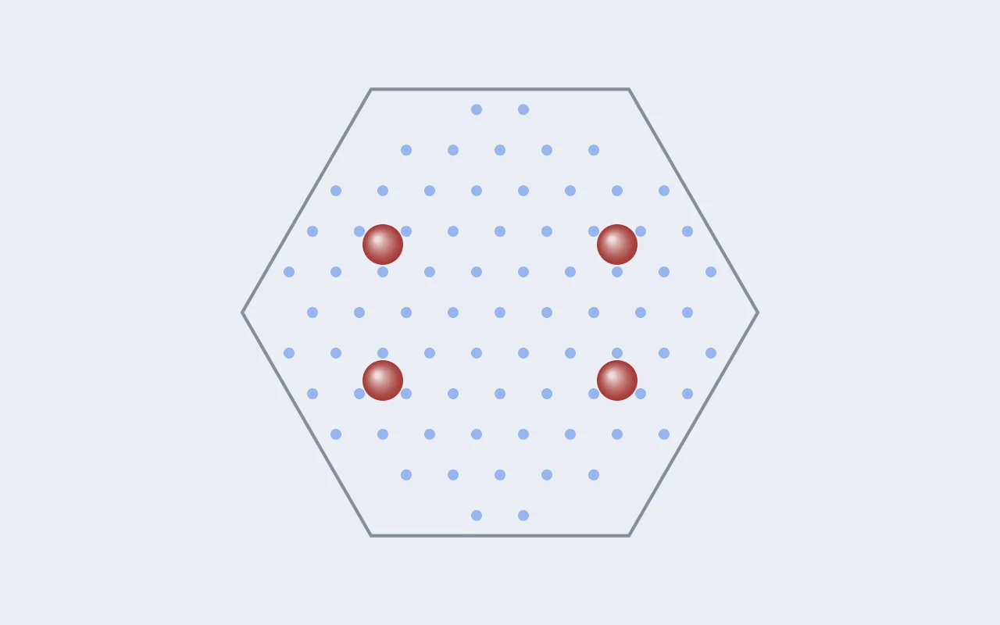
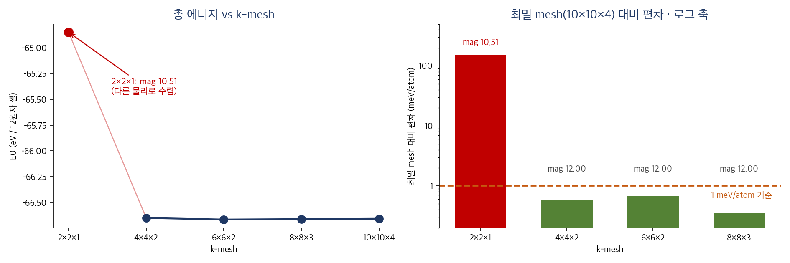

DFT 실습 [3] — k점 수렴 테스트: 2×2×1에서는 다른 자기 상태로 수렴했다
DFT 계산의 정확도는 두 설정이 정합니다. 파동함수를 나타낼 평면파를 어디까지 쓸지(ENCUT)와, 결정 속 전자 상태를 몇 개의 점(k점)에서 계산할지입니다. 실습 [2]에서 ENCUT을 520 eV로 정했고, 이번에는 같은 방법으로 k점 격자(k-mesh)를 정합니다. 시작하자마자 실수를 하나 했고, 마지막에는 k점이 너무 적으면 계산이 부정확해지는 정도가 아니라 다른 자기 상태로 수렴한다는 것을 봤습니다.

0. 실수: 빈칸이 남은 스크립트를 그대로 실행하다
이번 테스트는 연습 삼아 완성된 스크립트 대신 빈칸이 있는 스크립트를 받았습니다.
for K in ______ 같은 식입니다. 그런데 저는 그 빈칸을 채우지 않고
통째로 붙여넣어 실행했습니다. bash는 관대해서 ______를 그냥
문자열로
받아들였고, kp______라는 폴더가 생기고, sed는 실패하고,
원본과 완전히 똑같은 설정의 무의미한 잡이 클러스터에 제출됐습니다.
qdel 5351 # 무의미한 잡 회수
rm -rf kp______ # 사고 현장 정리수습은 두 줄이었지만 교훈은 오래 갈 것 같습니다: 이해하지 못한 명령은 실행하지 않는다. 특히 qsub이 들어간 스크립트는 공용 계산 자원을 실제로 씁니다. 자동화 스크립트는 잘못된 입력도 그대로 실행한다는 것을 직접 겪었습니다.
1. 본 문제: bash에서 "2 2 1"은 하나가 아니다
ENCUT 테스트와 이번의 결정적 차이: ENCUT은 450 같은 단일 숫자였지만
k-mesh는 2 2 1처럼 공백 포함 세 숫자 세트입니다.
bash의 for 루프는 공백을 기준으로 항목을 쪼개기 때문에
for K in 2 2 1 4 4 2 ...라고 쓰면 열두 개의 숫자로 흩어져 버립니다.
해법은 언더스코어로 인코딩해 두고 루프 안에서 되돌리는 것:
for K in 2_2_1 4_4_2 8_8_3 10_10_4; do
M=${K//_/ } # "2_2_1" → "2 2 1"
cp -r test01 kp${K//_/} # 폴더명은 kp221처럼 붙여서
cd kp${K//_/}
rm -f WAVECAR CHGCAR CHG OUTCAR OSZICAR vasp.log CONTCAR
sed -i "s/6 6 2/$M/" KPOINTS # 이번 실험의 유일한 변경점
sed -i "s/NaMnO2_test/k${K//_/}/" jobscript
cd ..
done
(${K//_/ }는 "변수 K 안의 모든 _를 공백으로 치환"이라는 bash
문법입니다. 기준점 6×6×2는 이전 계산을 재활용하니 네 폴더만 새로 만들면 됩니다.)
2. 제출 전 확인: 실수 이후 생긴 습관
아침의 사고 덕분에 새 습관이 생겼습니다. qsub 전에 반드시 grep으로 입력을 확인하기:
grep -B1 "0 0 0" kp*/KPOINTS # 각 폴더의 mesh 줄이 의도대로인가
grep ENCUT kp*/INCAR # ENCUT은 전부 520 그대로인가 (변인 통제)
grep "PBS -N" kp*/jobscript # 잡 이름이 서로 구분되는가세 출력이 전부 의도대로일 때만 제출합니다. 30초 확인으로 쓸모없는 계산 몇 시간을 막을 수 있습니다. 이번엔 통과였고, 네 잡이 나란히 큐에 올라갔고, 노드가 한가해 십여 분 만에 전부 끝났습니다.
3. 결과: 2×2×1만 다른 값
결과입니다. 에너지와 자기모멘트를 같이 뽑았습니다(이유는 §4).
kp221 E0= -.64848244E+02 mag= 10.5143 ← ??
kp442 E0= -.66651163E+02 mag= 11.9954
kp662 E0= -.66666258E+02 mag= 11.9991 (기준, 재활용)
kp883 E0= -.66662287E+02 mag= 11.9993
kp10104 E0= -.66658081E+02 mag= 11.9992
4. 자기모멘트 10.51의 의미
2×2×1의 에너지는 다른 점들과 원자당 150 meV 차이가 납니다. 그런데 더 중요한 것은 에너지가 아니라 자기모멘트입니다. 12가 아니라 10.5. 이론 [2]에서 Mn의 상태별로 셀 전체 모멘트를 정리한 표(Mn²⁺ 15, Mn³⁺ 고스핀 12, Mn⁴⁺ 9, Mn³⁺ 저스핀 6 μB)와 비교하면, 10.5는 어느 것에도 해당하지 않는 값입니다. 즉 이 계산은 "부정확한 NaMnO₂"가 아니라 전자 상태가 다른 무언가로 수렴한 것입니다.
원리는 이렇습니다. k점은 결정 전체의 전자 상태를 대표하는 표본 지점들인데, 너무 적게 뽑으면 어떤 상태까지 전자가 채워지는지가 달라져서 전자 점유가 다른 상태로 수렴합니다. k점이 부족한 결과는 오차가 커진 같은 상태가 아니라 다른 상태입니다. 그래서 이 점은 수렴 곡선 위의 나쁜 점이 아니라, 처음부터 같은 곡선 위에 있지 않은 점입니다.
실습 [2]에서 계산 결과를 보는 순서를 정하면서 자기모멘트 확인을 에너지 비교보다 앞에 뒀는데, 그 이유가 여기서 확인됐습니다. 에너지만 봤다면 "많이 틀리네" 하고 넘어갔을 것을, 자기모멘트가 다른 전자 상태라는 것을 알려 줬습니다.
5. 나머지 결과와 결정
4×4×2부터는 전부 정상입니다(mag 12.00). 가장 촘촘한 격자 대비 편차는 0.35~0.68 meV/atom 사이에서 오르내리는데, ENCUT 때처럼 한 방향으로 줄지 않는 이 ±0.5 meV/atom의 오르내림은 k점 수렴에서 흔한 모양이고, 이 설정의 k점 오차로 보면 됩니다.
결정: 6×6×2로 고정. 근거는 ① 자기모멘트 정상, ② 가장 촘촘한 격자 대비 0.7 meV/atom 이내(오르내림 폭 안), ③ 실습 [1]에서 곱셈으로 확인한 관례(실공간 축 길이 × k점 수 ≈ 20~30 Å)와 일치, ④ 8×8×3은 오르내림 폭 안의 차이뿐인데 k점 수는 2.7배. 나중을 위한 메모 하나: 슈퍼셀로 가면 실공간이 커지는 만큼 k점은 줄입니다(실공간 길이와 k점 간격은 반비례). 2×2 슈퍼셀이면 3×3×2 정도입니다.
이날 배운 것들
- 이해 못 한 명령은 실행하지 않는다. qsub이 든 스크립트는 공용 자원을 쓴다. 제출 전 grep으로 30초 확인한다.
- k점이 부족하면 오차가 아니라 다른 전자 상태가 나온다. 성긴 k-mesh는 전자 점유 자체를 바꿔 아예 다른 상태로 수렴시킬 수 있다. mag를 에너지보다 먼저 보는 이유다.
- bash에서 공백은 구분자다. "2 2 1" 같은 세트는 인코딩(2_2_1)해서 다루고, ${K//_/ }로 되돌린다.
- 정확도를 정하는 두 설정을 모두 데이터로 정했다: ENCUT = 520, k-mesh = 6×6×2. 이제 이 두 줄은 프로젝트가 끝날 때까지 건드리지 않는다.
다음. 수렴 테스트가 끝났으니 드디어 세팅이 아니라 물리를 바꾸는 계산으로 갑니다. 같은 NaMnO₂에 U = 3.9 eV(출처: 이론 [3])를 걸었을 때와 안 걸었을 때, 그리고 r2SCAN으로 올라갔을 때 에너지·자기모멘트·전자구조가 어떻게 달라지는지의 비교입니다. 처음으로 "정답을 모르는 채" 하는 계산은 아니지만, 처음으로 물리적 주장을 시험하는 계산입니다.

Seok
연구하면서 개발합니다. 배터리 재료를 원자 단위에서 계산하는 법을 바닥부터 배우는 중입니다. → 연구 · DFT 글 더 보기